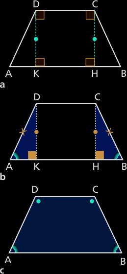

Il trapezio
Definizione 3.8.1. Un trapezio è un quadrilatero con due soli lati paralleli. □

I due lati paralleli si chiamano basi; una è la base maggiore, l’altra la base minore. La distanza fra le due basi è l’altezza del trapezio.
I due lati obliqui, non paralleli, vengono anche chiamati semplicemente lati del trapezio.
Definizione 3.9.2. Un trapezio isoscele è un trapezio avente i lati obliqui congruenti. □
Definizione 3.9.3. Un trapezio rettangolo è un trapezio avente uno dei lati perpendicolari alle basi. □

Nel caso di un trapezio rettangolo, il lato perpendicolare alle basi rappresenta l’altezza del trapezio.
Il teorema del trapezio isoscele
Teorema 3.9.4. In un trapezio isoscele gli angoli adiacenti a ciascuna base sono congruenti.
Ipotesi. 1. ABCD è un trapezio; 2. AD ≅ BC.
Tesi. 1. Â ≅ B̂; 2. Ĉ ≅ D̂.
Dim. Tracciamo le altezze CH e DK. Il quadrilatero KHCD ha, per costruzione, gli angoli retti, quindi è un rettangolo, pertanto possiamo scrivere DK ≅ CH. I trianogli rettangoli AKD e HBC hanno:
AD ≅ BC per ipotesi;
DK ≅ CH per la deduzione precedente.
Quindi sono congruenti per il quarto criterio di congruenza dei triangoli rettangoli.
In particolare, sono congruenti gli angoli
 e B̂.
L'angolo D̂ è supplementare di  e l'angolo Ĉ è supplementare di B̂ (fig.c), quindi i due cangoli Ĉ e D̂, supplementari di due angoli congruenti, sono congruenti fra loro. □
Corollario 3.9.5. In un trapezio isoscele, gli angoli opposti sono supplementari.
L’inverso del teorema del trapezio isoscele
Teorema 3.9.6 Se in un trapezio isoscele gli angoli adiacenti a una delle basi sono congruenti, il trapezio è isoscele.
Ipotesi. 1. ABCD è un trapezio. 2. Â ≅ B̂
Tesi. AD ≅ BC.
Dim. Tracciamo le altezze CH e DK (v. fig b sopra). I triangoli rettangoli AKD e HBC hanno:
DK ≅ CH perché lati opposti del rettangolo KHCD;
 ≅ B̂ per l'ipotesi 2.
Quindi sono congruenti per il secondo criterio di congruenza dei trinagoli rettangoli. In particolare, hanno le ipotenuse congruenti.
Il trapezio ABCD ha i lati obliqui AD e BC congruenti, quindi è isoscele. □